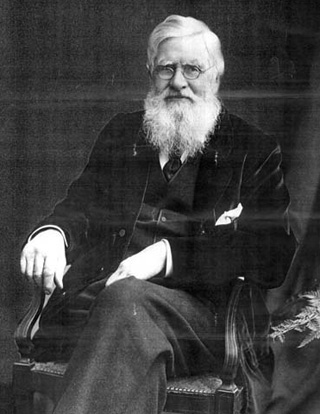

an interactive look into how spiritualism drove scientific inquiry in the late 19th and early 20th century
click to scroll down
candle
flowers
notebook
chair
FLAME COMMUNICATION
Candles and flames were often treated as a connection to the spirit world during séances, where some mediums claimed to receive messages through the movements and flickers of a flame.
William Barrett, a prominent British physicist and psychical researcher, conducted experiments to investigate whether flames exhibited reactions indicative of spirit communication or influence. His studies of "Sensitive Flames" applied rigorous scientific methodology to the effect of sound on flame movement, and his findings sparked further research into phenomena that challenged conventional understanding of matter.
Sir William Fletcher Barrett
SPIRIT FLOWERS
During séances, mediums often claimed the ability to summon objects from the spirit world as manifestations of spiritual presence. One medium, Agnes Guppy-Volckam, claimed to be able to apport flowers and fruit. In an instance documented by Alfred Russel Wallace, Guppy-Volckman sat for four hours in a small, gas-lighted room in Wallace's home. Afterwards, a abundant array of flowers appeared on the bare table, including anemones, tulips, chrysanthemums, Chinese primroses, and ferns.
Wallace described the flowers as "absolutely fresh as if just gathered from a conservatory," "covered with a fine cold dew", and perfectly intact.
Alfred Russell Wallace
AUTOMATIC WRITING / TELEPATHY
The phenomenon of automatic writing in séances describes when words and messages would wrote themselves on a page, seemingly controlled by an unseen force while the medium was in a trance-like state. This was just one example of activities that spiritualists linked to telepathic communication with a higher consciousness.
Edward Fournier d'Albe, an Irish chemist and physicist, was intrigued by such manifestations and their implications on consciousness and an immortality. His research dove into the concept of "psychomeres", particules that he believed composed the human soul and could potentially condense back into a physical form after death to then facilitate telepathic communication with bodies in the physical world.
Edmund Edward Fournier d'Albe
IMPOSSIBLE MOVEMENT
Impossible movement such as levitating tables or the teleportation of furniture was commonly observed during séances and heavily studied by spiritualists and scientists who sought to understand their mechanisms and implications.
Scientists conducted controlled experiements within séance settings to carefully observe the movements of objects and rigorously document observations with written, photographic, and audio evidence to try and rule out explanations of fraud or mechanical trickery.